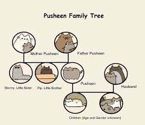

Pusheen's History
Even tho you may think that Pusheen is a japanese kawaii cat, she was actualy made in Ilinois.
Pusheen is a girl cat in case you're wondering.
Pusheen loves blogging, snacking, and going on adventures.
Her relatives are:Stormy (Little Sister), Pip (Little Brother), Sunflower(mom), Biscuit(dad)
The Pusheen family tree looks like this

WE LOVE PUSHEEN!!!
What is Pusheen's birthday?
FEB 18.
Who created Pusheen?
Claire Belton.
Is Claire Belton still alive?
Currently, she is President of Pusheen Corp in Chicago, Illinois.